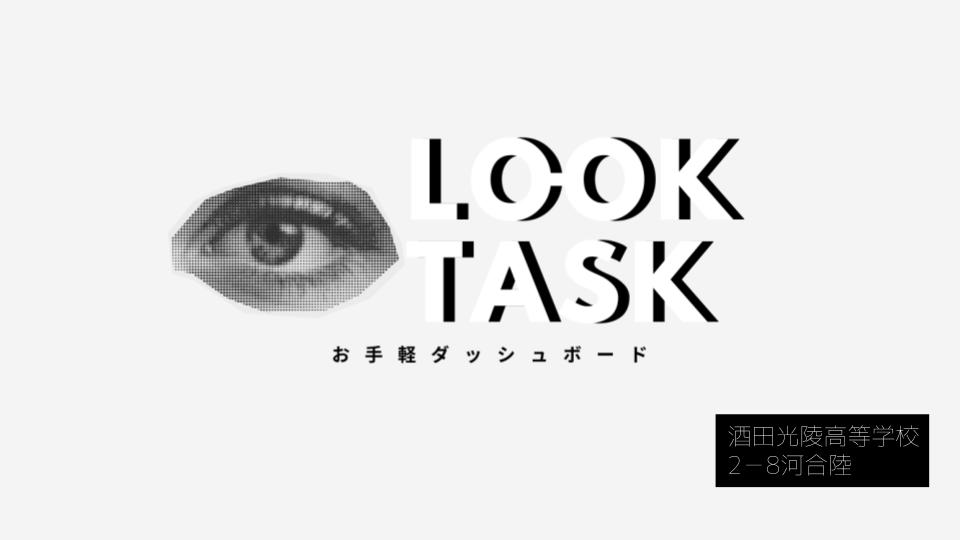

アプリについて
APIから取得した情報をまとめ、天気、ニュース、通知、リマインダーなどをシンプルに確認できるダッシュボードを制作しました。必要な情報へ迷わず到達できる構成を意識しています。
Programming・AI
期間：2026年8月
G's CAMP YAMAGATAなどで制作した、情報を一目で確認できるタスクアプリケーションです。

assets/look-task.jpg
APIから取得した情報をまとめ、天気、ニュース、通知、リマインダーなどをシンプルに確認できるダッシュボードを制作しました。必要な情報へ迷わず到達できる構成を意識しています。